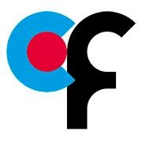

2021
Currently I work as a Machine Learning Engineer at Polygon
working on machine learning applications in computer vision with focus on OCR.
2020
I worked as a Machine Learning Engineer working at K1-digital.
I work on a wide range of applications from computer vision, time-series forecasting and exploratory data analysis.
2018-2020

I was a research assistant at the Champalimaud Neuroscience Institute working
on an application of video predicton generative adverarial networks to
understand changes in mouse behavior affected by optogenetic activation of
serotonergic neurons in the dorso-raphe nuclei. This project led to a successfull
master thesis defense.
On my second year I worked on an evolutionary approach to model
receptive field properties of visual neurons.
2017-2018

Started my Masters in Cognitive Science with a focus on
artificial intelligence at the University of Lisbon.
2009-2017

For my bachelors I studied applied mathematics and philosophy at the University of São Paulo in Brazil,
taking my philosophy degree in 2017.